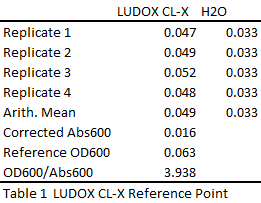
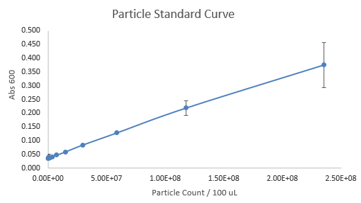
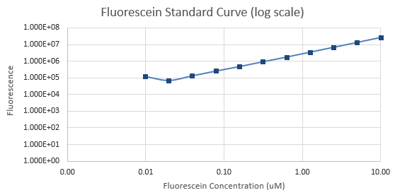
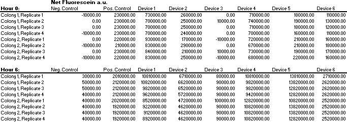
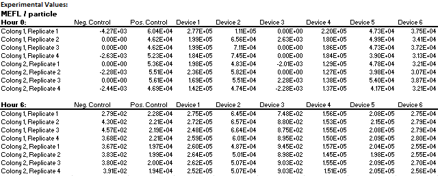
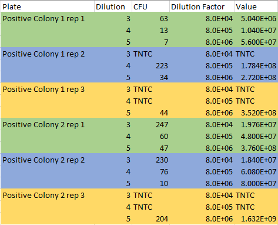
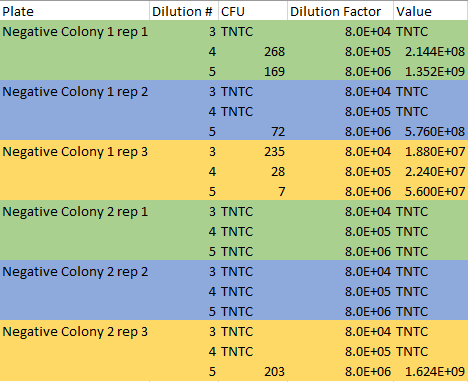

For the past few years, iGEM has hosted an interlaboratory studies across the world to establish reproducibility in fluorescence measurement. The 2018 Stony_Brook Team participated in iGEM’s fifth interlab study. This year’s interlab focuses on standardizing fluorescence measurements by comparing the use of optical density to counting colony-forming units (CFUs) in transformed E. coli. There is a lot of variability in fluorescence measurements based on different instruments, so this year’s study wanted to utilize a direct approach to measuring fluorescence by counting CFUs. In order to conduct the study, the team transformed DH5-alpha Escherichia coli cells with eight plasmids that iGEM provided in the distribution kits. We followed iGEM’s transformation protocols for single tube transformation.
Calibration 1
First, we measured the OD600 of LUDOX CL-X in order to obtain a reference point. The results are depicted in Table 1.

Table 1: Calibration 1 Results
Calibration 2
Next, we conducted serial dilutions using silica beads that are the same size as E. coli to create a standard particle curve. As expected, the curve for the standard particles was linear. The results are depicted in graph 1 and graph 2.

Graph 1: Calibration 2 Particle Standard Curve
Graph 2: Calibration 2 Log-Scale Particle Standard Curve
Calibration 3
Finally, we did serial dilutions with fluorescein to obtain a fluorescence standard curve. The results are pictured in graph 3 and graph 4. As expected, the curves for fluorescence was linear.
Graph 3: Calibration 3 Fluorescein Standard Curve

Graph 4: Calibration 4 Log-Scale Fluorescein Standard Curve
Cell measurement protocol
After completing all of the calibration protocols, we transformed our E. coli with two controls and the six test devices provided by iGEM and plated them onto chloramphenicol plates. After 16-18 hours of growth, we transferred two colonies from each plate into liquid culture with a total of 16 liquid cultures. We incubated these liquid cultures for 16-18 hours. After growing the cultures overnight, we made a 1:10 dilution and then measured the absorbance of the diluted cultures. Then, we furthered diluted them to a target absorbance of Abs600 = .2 for a final volume of 12 mL. We took out samples of these diluted cultures at times 0 and 6 hr mark. We measured the fluorescence and OD of the samples using a plate reader. Our data are displayed in tables 2 through table 7.
Table 2: Abs600 Raw Readings
Table 3: Fluorescence Raw Readings
Table 4: Fluorescence per OD for time 0 (top) and time 6 (bottom)
Table 5: Net Absorbance at 600 for time 0 (top) and time 6 (bottom)

Table 6: Net fluorescein for time 0 (top) and time 6 (bottom)

Table 7: MEFL per particle
Colony Forming Units
We determined the number of cells in a plate by simply counting them. First, we plated our positive and negative controls onto plates with chloramphenicol. We prepared our starting sample by diluting the positive and negative control colonies for an 8-fold dilution. After, we diluted the cultures further to a target OD of .1 and created triplicates of each culture for a final total of twelve. We conducted serial dilutions with the twelve samples. We plated dilution 3 (8x104) , dilution 4 (8 x 105) , and dilution 5 (8 x 106) on agar plates and incubated them overnight. After 18-20 hours, we counted the colonies on each of the plate and calculated the CFU/mL. The data is displayed in tables 8 through 10. For plates with cells that were too numerous to count, we labeled as “TNTC” in the tables.
Table 10: OD of the starting samples

Table 9: Colony forming units per 1 mL of an OD600= .1 for positive colonies (BBa_I20270)

Table 10: Colony forming units per 1 mL of an OD600= .1 for negative colonies (Bba_R0040)
iGEM Protocol Footnote
The plate reader protocol was very thorough and straightforward. We did not run into any problems following the calibration protocols. In the beginning we were unsure about the serial dilution protocol and if we were allowed to reuse pipette tips, however after researching, we re-used our pipette tips. However, the protocol expressed that silica beads needed to be re-mixed before placing into the plate reader for Calibration 2, and to avoid errors in absorbance, we used different pipet tips for each row of the well plate. We ran through a lot of pipet tips to receive precise values. The only problem we ran into was inoculating our transformed E coli. At first, absorbance values remained the same as the media after 16 hours due to suffocation of the E. coli by capping the tubes too tightly. Also, we had too much media to space ratio for the tubes. We adjusted by loosely capping the falcon tubes with the transformed E coli at 37 °C, 220 rpm and using a larger tube for the amount of media required. Overall, our data can be used to approach an interlaboratory standard for fluorescence measurements.
2018 Stony Brook iGEM
The Stony Brook iGEM Team is proud to present to you their sweet and energy filled project! Made with love <3